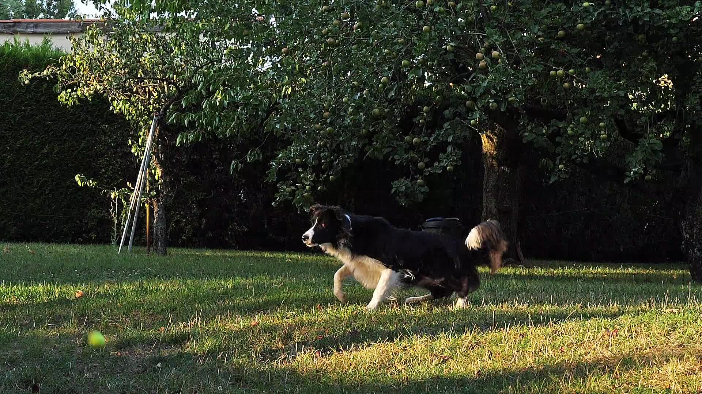

Microchipping
Give your pet a voice and yourself peace of mind knowing your pet is permanently identifiable even if they are not wearing a collar or identifying tags. Microchipping is a one-time, inexpensive, and is relatively quick and painless.

From first vaccines to advanced dermatology, Hands of Hope Animal Hospital offers best-medicine care for dogs and cats in Byron, Georgia — all in a calm, Fear Free environment.
Give your pet a voice and yourself peace of mind knowing your pet is permanently identifiable even if they are not wearing a collar or identifying tags. Microchipping is a one-time, inexpensive, and is relatively quick and painless.
Vaccines help to protect your pet from many serious illnesses. Our vaccine protocols are specifically tailored to your pet’s lifestyle and are based on the latest medical evidence and vaccination guidelines.
Dental health is more than just seeking a remedy for bad breath. Chronic periodontal disease can cause severe pain and lead to damage to other organ systems including the heart, kidneys, and liver. Regular dental cleanings ensure that your pet has better breath and a long, happy, pain free life.
Regular physical exams and routine diagnostic testing allow for early intervention on a wide number of disease processes that, if left untreated, could result in the reduction of your pet’s quality of life or even shorten their lifespan.
All dogs itch sometimes, but when you notice it becoming more frequent, it could be a sign of a serious medical condition. It is important to determine the cause of the itch to prevent further damage to the skin and provide needed relief to your pet. Our team can help!
Providing the newest research, strategies and techniques to give your pet the best comfort possible as they age or after an injury